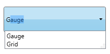
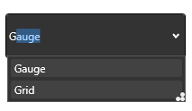
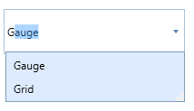
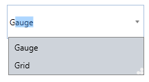
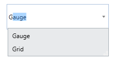
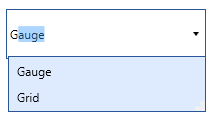
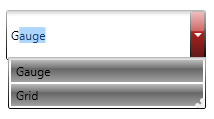
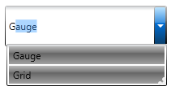
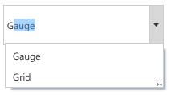

The Appearance of the AutoComplete control can be changed using the VisualStyle property. The following styles are supported by AutoComplete control.
· Blend
· Office2003
· Office2007Blue
· Office2007Black
· Office2007Silver
· ShinyBlue
· ShinyRed
· SyncOrange
· VS2010
· Metro
The following code snippet illustrates how different visual styles can be applied to the control.
|
[XAML] <syncfusion:AutoComplete Height="25" Width="200" syncfusion:SkinStorage.VisualStyle="Office2007Blue"/> |
|
[C#] SkinStorage.SetVisualStyle(autoComplete, "Office2007Blue"); |

Figure 34: Windows7

Figure 35: Blend

Figure 36: Office2007Blue

Figure 37: Office2007Black

Figure 38: Office2007Silver

Figure 39: Office2003

Figure 40: ShinyRed

Figure 41: ShinyBlue
Figure 42: SyncOrange

Figure 43: Metro